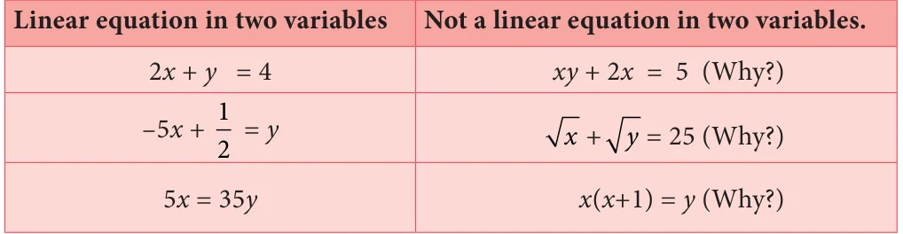
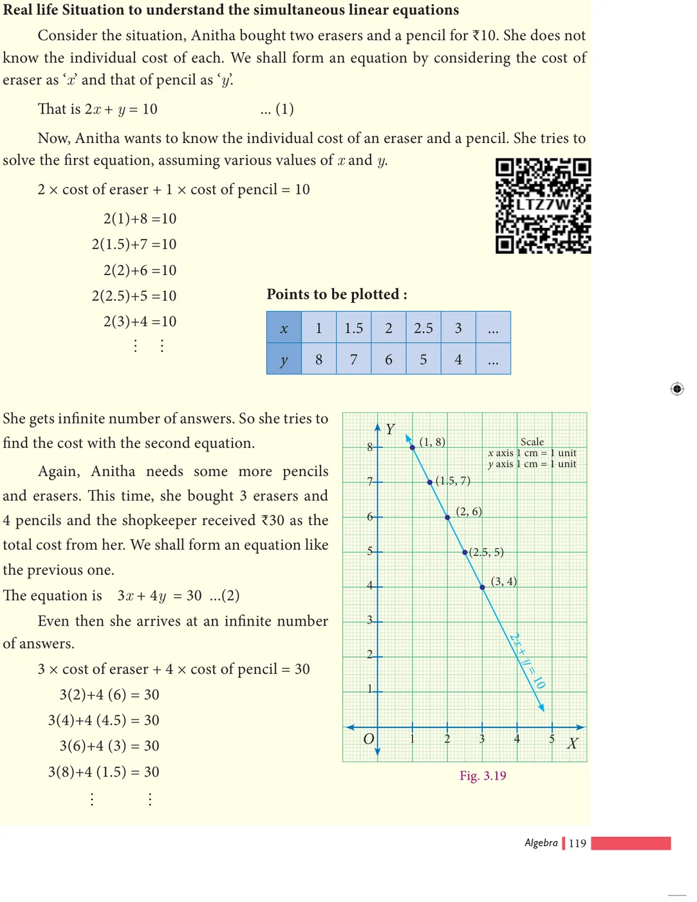
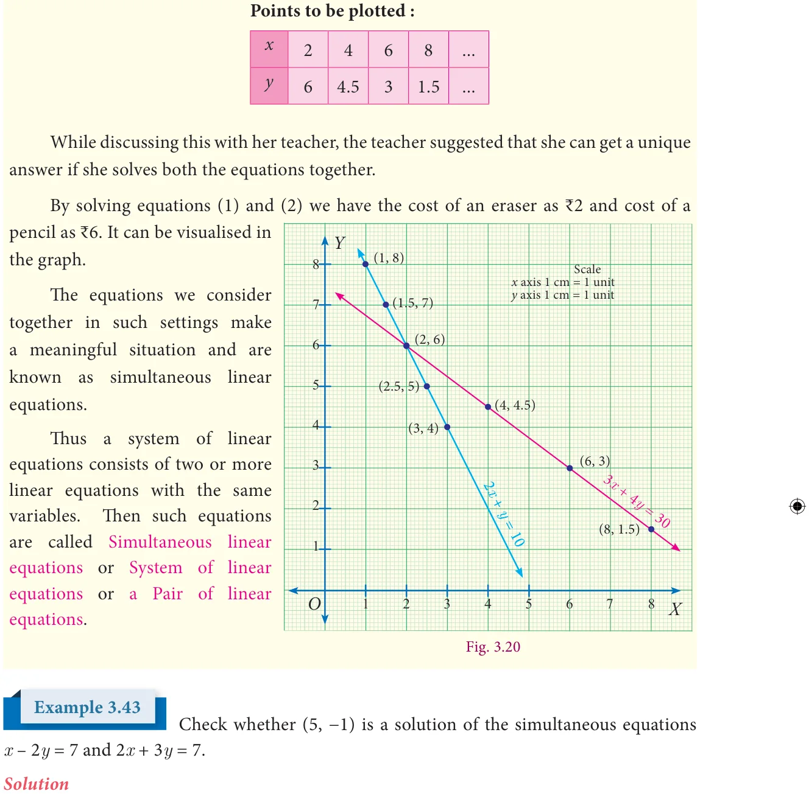
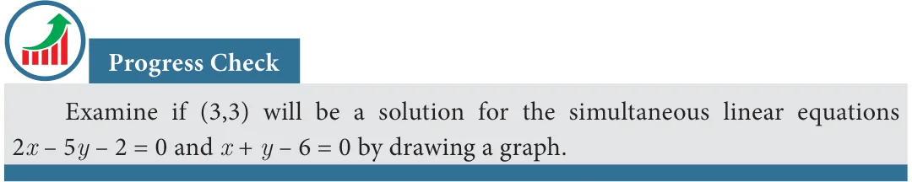
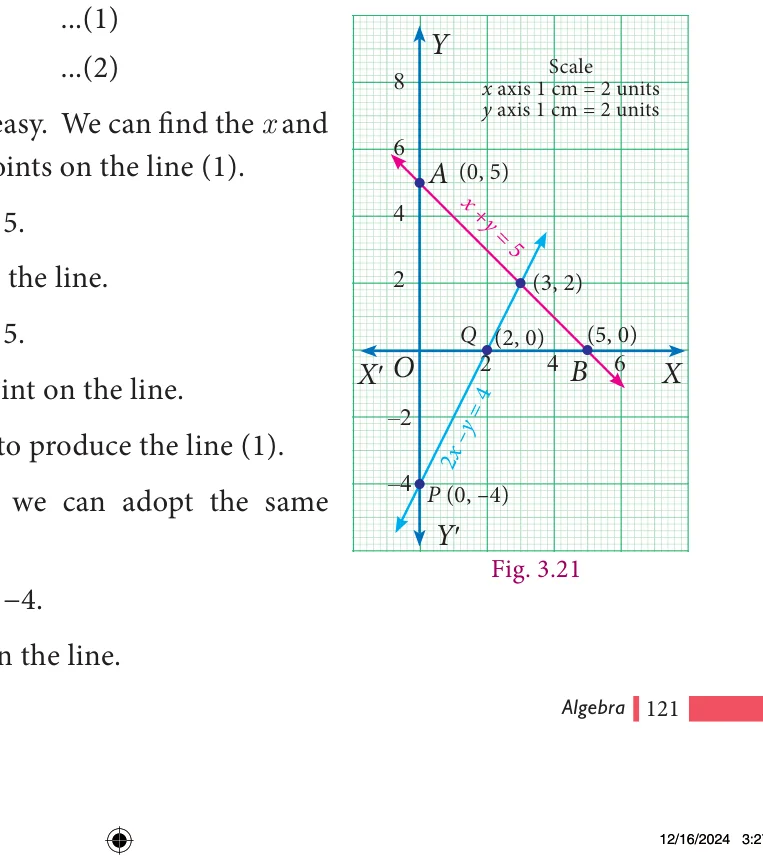
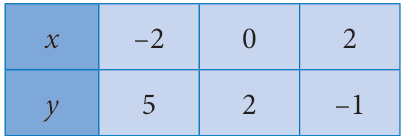
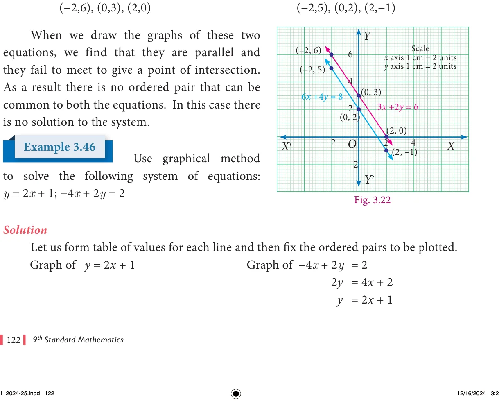
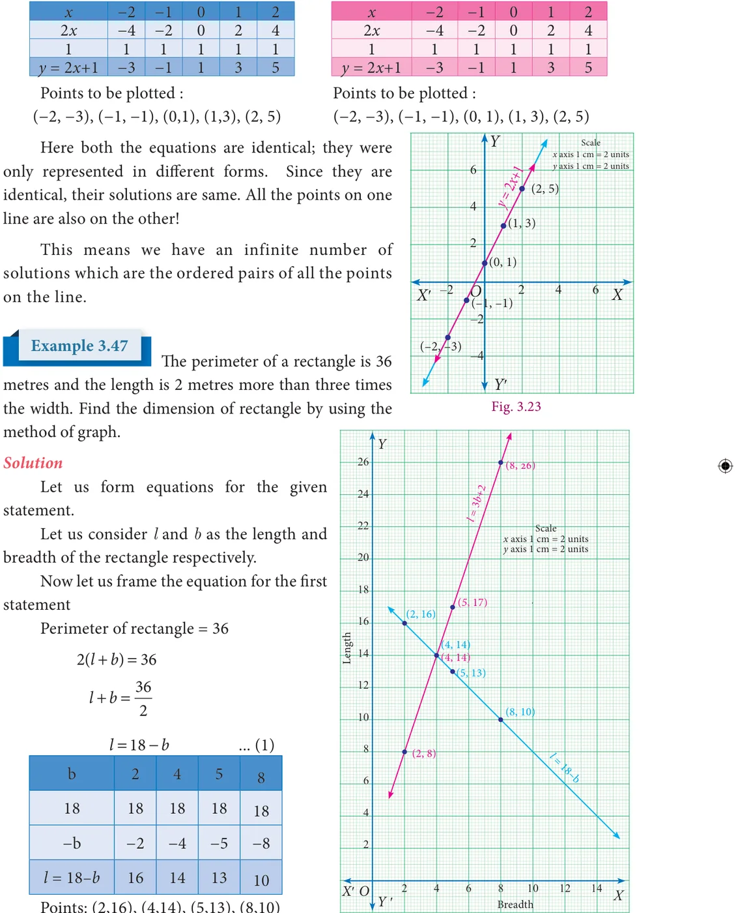
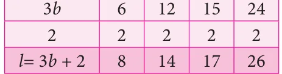

A linear equation in two variables is of the form ax + by \(+ c = 0\) where a, b and c are real numbers, both a and b are not zero (The two variables are denoted here by x and y and c is a constant).
Examples

If an equation has two variables each of which is in first degree such that the variables are not multiplied with each other, then it is a linear equation in two variables (If the degree of an equation in two variables is 1, then it is called a linear equation in two variables).
An understanding of linear equation in two variables will be easy if it is done along with a geometrical visualization (through graphs). We will make use of this resource.
Why do we classify, for example, the equation \(2x + y = 4\) is a linear equation? You are right; because its graph will be a line. Shall we check it up?
We try to draw its graph. To draw the graph of \(2x + y = 4\), we need some points on the line so that we can join them. (These are the ordered pairs satisfying the equation).
To prepare table giving ordered pairs for \(2x + y = 4\). It is better, to take it as \(y = 4 - 2x\). (Why? How?)
When \(x = - 4\), \(y = 4 - 2( - 4) = 4 + 8 = 12\) When \(x = - 2\), \(y = 4 - 2( - 2) = 4 + 4 = 8\) When \(x = 0\), \(y = 4 - 2(0) = 4 + 0 = 4\) When \(x = +1\), \(y = 4 - 2(+1) = 4 - 2 = 2\) When \(x = +3\), \(y = 4 - 2(+3) = 4 - 6 = - 2\)
Thus the values are tabulated as follows:

(To fix a line, do we need so many points? It is enough if we have two and probably one more for verification.)


variables.
2x+y
same time.
The equations we consider together in such settings make a meaningful situation and are known as simultaneous linear equations.


Given \(x - 2y = 7\) …(1)
\(2x + 3y = 7\) …(2)
When \(x = 5\), \(y = - 1\) we get From \((1) x - 2y = 5 - 2( - 1) = 5 + 2 = 7\) which is RHS of (1) From \((2) 2x + 3y = 2(5) + 3( - 1) = 10 - 3 = 7\) which is RHS of (2) Thus the values \(x = 5\), \(y = - 1\) satisfy both (1) and (2) simultaneously. Therefore (5, \(- 1)\) is a solution of the given equations.

3.8.2 Methods of solving simultaneous linear equations
There are different methods to find the solution of a pair of simultaneous linear equations. It can be broadly classified as geometric way and algebraic ways.

Solving by Graphical Method
Already we have seen graphical representation of linear equation in two variables. Here we shall learn, how we are graphically representing a pair of linear equations in two variables and find the solution of simultaneous linear equations.

Use graphical method to solve the following system of equations:
\(x + y = 5\); \(2x - y = 4\).
Solution
Given \(x + y\)

To draw the graph (1)
When x Thus A When y Thus B Plot A and
To draw the graph of (2),
procedure.
When x
When \(y = 0\), (2) gives \(x = 2\). Thus Q(2,0) is another point on the line. Plot P and Q ; join them to produce the line (2).
The point of intersection (3, 2) of lines (1) and (2) is a solution. The solution is the point that is common to both the lines. Here we find it to be (3,2). We can give the solution

as \(x = 3\) and \(y = 2\).
Use graphical method to solve the following system of equations:
\(3x + 2y = 6\); \(6x + 4y = 8\)
Solution
Let us form table of values for each line and then fix the ordered pairs to be plotted. Graph of 3 Graph of 6


Points to be plotted : Points to be plotted :


The second statement states that the length is 2 metres more than three times the width which is a straight line written as ... (2) Now we shall form table for the above equation (2). \(\frac{l=3b+}{8}\)

Points: (2,8), (4,14), (5,17), (8,26) The solution is the point that is common to both the lines. Here we find it to be (4,14).
We can give the solution to be \(b = 4\), \(l = 14\). Verification :
\(2(l+b) = = 3b + 2 ...(2) 2(14+4) = = 3(4) +2 2 \times 18 = = 12 + 2 36 = = 14\) true

- 1.Draw the graph for the following
- (i)\(y = 2x = - =\) \(\frac{3}{2}\) \(+ + =\)
- 2.Solve graphically
- (i)\(x + y = 7\); \(x - y = 3\) (ii) \(3x + 2y = 4\); \(9x + 6y - 12 = 0\)
- (iii)\(\frac{xy}{24} + =1\); \(\frac{xy}{24} + = 2\) (iv) \(x - y = 0\); \(y + 3 = 0\)
- (v)\(y = 2x +1\); \(y + 3x - 6 = 0\) (vi) \(x = - 3\); \(y = 3\)
- 3.Two cars are 100 miles apart. If they drive towards each other they will meet in 1 hour.
If they drive in the same direction they will meet in 2 hours. Find their speed by using graphical method.
Some special terminology
We found that the graphs of equations within a system tell us how many solutions are there for that system. Here is a visual summary.